Overview
In our project, we claimed several engineering successes. However, how do we make sure what we see is truly a success? In this section, we need to make sure that what we do is credible and reproducible.
Can our engineered Bacillus subtilis detect plant stress and respond by producing and releasing the appropriate plant protectant at the right moment? How well does the protectant aid in plant growth?
That question splits into four measurable pieces, and the four families below answer them in order. Each one is reported the same way: how the measurement works, what it is useful for outside this project, the protocol in enough detail to repeat, and what it returned, including the runs that failed.
Plant assays
Does a protectant rescue a stressed plant, and does timing matter? Arabidopsis on agar, read as root length, fresh weight and chlorophyll.
Optogenetic control
Can the light plate deliver a controlled signal? Lux matched LED by LED, then growth and expression read against colour and intensity.
Protectant assays
Is the protein there, and is it active? Transformation first, then ammonium released from ACC as the activity readout.
Bioreactor assays
Is the reactor doing what the design says? Density read in the loop, pressure and flow across the membrane, and the containment checks.
The four are not independent. The plant assay is the only one that reads the thing the project is for, and it depends on the protectant assays to say that the protein sprayed on a plate was really there; the protectant assays depend on the bioreactor to produce the material; and the bioreactor's own control loop depends on the light plate and the inline photometer agreeing about what the culture is doing. A failure anywhere upstream shows up as an unexplained plant result, which is why each block below names its blank and its controls.
Plant assays
Three measurements share one platform. The agar assay sets the stress and the dose, the chlorophyll extraction reads how much photosynthetic machinery survived it, and the physical measurements give the root length and the fresh weight that every chlorophyll number is normalised against.
Agar plate stress test, horizontal and vertical
Our project mainly discusses whether an engineered Bacillus subtilis can supply the right plant protectant at the right moment and how much that protectant will help plant grow and further leads to better crop yield for farmers in real life application. To know whether a protectant truly has a rescue effect on a plant and whether timing matters, we built a plant measurement on Arabidopsis thaliana seedlings grown on ½ Murashige and Skoog (MS) agar (Murashige & Skoog, 1962). It needed to be a controlled and repeatable system where the stress dose, protectant types, and the timing could each be changed one at a time.
Salinity stress damages plants in readable ways. Exposure of Arabidopsis to NaCl alters stress-response gene expression (Cheng et al., 2013; Rolly et al., 2020) and, at the whole-seedling level, stunts root growth, bleaches leaves through loss of chlorophyll (chlorosis), and turns leaves purple through anthocyanin accumulation. Stress ethylene contributes to these effects as it inhibits root elongation (Růžička et al., 2007) and impairs photosynthesis (Ceusters & Van De Poel, 2018), which is the reason why the bacterial enzyme ACC deaminase, which breaks down the ethylene precursor ACC, is one of our protectants (Glick, 2014). With the damage showing up in root length differences, biomass and leaf pigment, a protectant that works should be able to lengthen roots, raise biomass, and preserve chlorophyll compared with a stressed and untreated plate.
We chose agar for three reasons. Firstly, every seedling receives identical nutrients and an exact stress dose, which is hard to guarantee in soil as it contains more uncontrollable variables such as ununiformed moisture levels, pH, and minerals. Secondly, early physiological changes appear within days of observation, allowing many conditions to be screened quickly. Thirdly, it establishes clear baselines before testing in complex soil systems for salinity concentrations that can easily demonstrate stressed environments, protectant concentrations that has obvious rescue effectiveness on plants, and protocol validations.
| Readout | Purpose | Units | Main limitations |
|---|---|---|---|
| Primary root length | Test growth under stress (vertical plates) | mm, from ImageJ on calibrated and scaled photographs | Measures one organ. Photo scale must be set accurately. Roots that curl and misplaced plants are harder to trace |
| Fresh weight | Measure total biomass; normalizes chlorophyll data | mg, measured per group | Smaller seedlings weigh little so errors are proportionally large |
| Photographs | Document physical leaf color, leaf area, lateral roots, and contamination issues | qualitative | Visual only. Used to support and not replace the quantitative data |
| Chlorophyll content | Test leaf health and chlorosis | mg chlorophyll per g fresh plant weight | Per-weight values can look high in tiny and stressed seedlings so they must be read and normalized with fresh weight and photographs |
Vertical square plates
The plates are designed to let roots grow along the surface under gravity, so primary root length and lateral roots can be measured from photographs. We used them for the trehalose experiments in Phase 1 and planned them for the heat tests.
Horizontal circular plates
The plates are designed to hold liquid protectant on the agar surface, which vertical plates cannot fulfill. We used them for the CH bio peptide and ACCD experiments in Phases 2 and 3, where treatment timing of salinity was a variable (pre-treatment, co-treatment, after-treatment). Horizontal circular plates also provide higher capacities of n values in each trial which minimizes inconsistencies; for example, vertical square plates can allow the testing of around 9 to 10 Arabidopsis thaliana seedlings while horizontal circular plates can hold around 40 seedlings.
The experiments ran in three phases, ordered by how well each protectant was understood, commercially used, and researched so that each phase checked the system before the next relied on it. Phase 1 used trehalose, a disaccharide reported to protect Arabidopsis under salinity stress (Kim et al., 2025), to find a NaCl level that gives a readable signal and to confirm the platform can show a rescue. Phase 2 used a commercial peptide (CH Biotech bio peptide) as a positive control and to test application timing. Phase 3 used ACC deaminase, LEA, and BoPep4 secreted by our engineered Bacillus subtilis. A heat-stress version of the assay, based on published thermopriming protocols (Lee et al., 2023; Auverlot et al., 2025), was designed for the same protectants.
What the platform is useful for
Seedlings on agar are one of the most widely used formats in plant biology and the platform described here applies beyond our project in several ways.
- Screening for salt-tolerance of plants. Arabidopsis grown on agar supplemented with NaCl is a standard way to test how genes, mutants, or treatments change salt tolerance (Cheng et al., 2013; Rolly et al., 2020). Our dose-response data tested ranges of salinity concentrations from 75, 100, 150, to 250 mM NaCl. 75 mM was mild, 100 mM was moderate-to-severe and showed rescue, 150 mM severely stunted growth, and 250 mM was beyond recovery and showed signs of chlorosis and bleaching. The discovery allows future researchers to skip the pretests and begin in the 75 to 100 mM window where growth is reduced but rescue is still visible.
- Testing plant growth-promoting bacteria and biostimulants. Microbes that lower plant ethylene with ACC deaminase are used to promote plant growth under stress (Glick, 2014). Plate assays are a common way to test bacterial effects on Arabidopsis stress tolerance (Lee et al., 2023). Our design compares bacterial products at defined timings and with equal liquid controls. The standardized protocols allow a reusable screen for any protectant testing, so other teams and researchers can test their own molecule or microbe with the same readouts, plates, and analysis.
- Testing exogenous protective compounds. Sugars such as trehalose have been tested on Arabidopsis thaliana under salinity stress (Kim et al., 2025). Our trehalose sets show how to find the usable dose range of a candidate compound. Too high of concentrations might inhibit and harm plants as well because it triggers the toxic accumulation of an intermediate signaling metabolite, trehalose-6-phosphate (T6P), which disrupts normal carbon allocation and energy signaling, causing growth arrest such as stunted roots and undeveloped leaves (Schluepmann et al., 2004).
- Heat-stress assays. The same plates and readouts can be used with thermopriming protocols (Lee et al., 2023; Auverlot et al., 2025).
- Timing studies for delivery driven by sensors. The protectant is applied before, with, or after stress; therefore, the platform can test whether early delivery matters. This directly connects to the question behind AIoT-based stress prediction and sensing in the field.
- Teaching and iGEM labs. The equipment is inexpensive (plates, a camera in a light box, a balance, and free ImageJ software) and every step is described below in the procedural steps.
- Honest record of failure modes. Especially for contamination issues or failure to see effectiveness in protectant doses, so other teams can avoid repeating them as to also provide improvements and suggestions to protocols for higher quality readouts.
Materials per 50 mL vertical square plate and per 30 mL horizontal round plate
| Item | Manufacturer or source | Per 50 mL plate (vertical square) | Per 30 mL plate (horizontal round) |
|---|---|---|---|
| Arabidopsis thaliana seeds | Col-0; from Professor Kyle and Professor Cheng | 33 seedlings per plate for stratifying and 9 per plate after transferring and for actual trial testing | 40 seedlings per plate for stratifying and testing |
| ½ MS basal salt mixture without sucrose | MS Bioexp, catalog number P002 | 0.115 g (2.3 g/L) | 0.069 g (2.3 g/L) |
| Sucrose | Shimakyu's Pure Chemicals | 0.5 g (1% w/v); 1.5 g (3%) in Sets 1 to 3 | 0.3 g (1% w/v) |
| MES buffer | Santa Cruz Biotechnology, lot 10326 | 0.025 g | 0.015 g |
| Agar powder | Kaidin Technology Co., Ltd, lot 8140311 | 0.5 g (1% w/v) | 0.18 g (0.6% w/v) |
| Distilled water | – | 50 mL | 30 mL |
| KOH (industrial grade) for pH adjustment | Cheng Yi Chemical Co., Ltd, 95%, CAS 1310-58-3 | as needed, to pH 5.7 to 5.8 | as needed, to pH 5.7 to 5.8 |
| NaCl | Bioshop Canada Inc., CAS 7647-14-5 | see the NaCl table | see the NaCl table |
| Trehalose | Cheng Yi Chemical Co., Ltd, dihydrate, SD300111 | see the dose table | see the dose table |
| CH Biotech bio peptide | CH Biotech | 1/500 dilution in sterile water (20 µL per 10 mL) | 1/500 dilution in sterile water (20 µL per 10 mL) |
| Purified ACC deaminase, LEA, BoPep4 | Secreted by our engineered B. subtilis; filtered through 0.22 µm | sprayed; see the procedure | sprayed; see the procedure |
| Square plates (vertical) and round plates (horizontal) | – | 1 plate per condition | 1 plate per condition |
| Sterile spray bottle and nozzle | – | 3 sprays per plate | 3 sprays per plate |
| Camera and light box | – | fixed position, black and white backgrounds | photographed in the biosafety cabinet against a black background |
| Analytical balance | – | 1, for fresh weight | 1, for fresh weight |
The draft leaves the manufacturer and model of the plates, spray bottle, camera and balance to be filled in.
Stress and protectant doses NaCl per plate, and what each phase applied
| Final NaCl concentration | Per 30 mL, mixed with agar | Per 50 mL, mixed with agar | Per 30 mL, 1 mL per plate as liquid treatment |
|---|---|---|---|
| 75 mM | 0.131 g | 0.219 g | 0.00438 g (4.38 mg) |
| 100 mM | 0.175 g | 0.292 g | 0.00584 g (5.84 mg) |
| 150 mM | 0.263 g | 0.438 g | 0.00877 g (8.77 mg) |
| 250 mM | 0.438 g | 0.731 g | 0.01461 g (14.61 mg) |
| Phase | Protectant | Doses and how added |
|---|---|---|
| 1 | Trehalose | 0.125 to 10 mM, mixed into the agar before it sets |
| 2 | CH bio peptide | 1/500 dilution (manufacturer's recommended use); 1 mL per plate after submerging the surface |
| 3 | ACCD, LEA, BoPep4 | filtered (0.22 µm), 3 sprays per plate from 10 cm |
The trehalose stock concentration and the volume added per plate are still to be recorded in the draft.
Growth procedure medium, sterilization, stratification and the daily record
Neutral ½ MS medium agar preparation for stratification
- Prepare the ½ MS medium powder without sucrose, MES buffer, distilled water, sucrose (1%) and agar powder in the amounts in the materials table.
- Add the contents above into a flask.
- Use a hot plate to stir, with a magnetic stirring rod, until no sediments are left in the solution.
- Use the pH probe and measure the pH of the solution (target pH is 5.7 to 5.8). If the pH is too low, add 0.1 M KOH slowly to increase the pH. If the pH is too high, add 0.1 M HCl slowly to decrease the pH.
- Wrap the neck of the flask with aluminum foil and stick a piece of indicator tape on top.
- Autoclave for 20 minutes at 127 °C. Wait for the pressure to reach 0 before retrieving the flask.
- During the autoclave, label all of the petri dishes with a marker in the biosafety cabinet. Include agar percentage and date the agar was made.
- Transfer half of the flasks to a laminar flow hood. Store the other half of the flasks in the hot bath at 60 °C while pouring so that the agar solution does not solidify immediately.
- Make sure the surface is dry by wiping the flasks with a paper towel before spraying 70% EtOH on them.
- Pour each of the medium mixtures into their petri dishes (around 30 mL for horizontal round plates and 50 mL for vertical square plates).
- Transfer the other half of the flasks into the laminar flow hood and pour each of the medium mixtures into the petri dishes.
- Let the petri dishes solidify at room temperature (around 25 °C) for around 10 minutes under the laminar flow hood with the plastic lid on.
Seed sterilization and germination
- Surface-sterilize seeds, then rinse with sterile water.
- Sow seeds on neutral ½ MS agar plates: 40 seeds per plate on the horizontal round plates and 33 seedlings per plate on the vertical square plates, following the seed templates.
- Use breathable tape to seal each of the agar plates.
- Wrap the agar plates with aluminum foil.
- Stratify in the dark at 4 °C. Stratification synchronizes germination so seedlings are uniform and have consistent growth conditions.
- Move plates to the growth chamber. Grow for 4 days (horizontal round plates) or 7 days (vertical square plates) before protectant dosing and salinity concentration stress trials.
The sterilizing agent, its concentration and contact time, the number of rinses, and the growth chamber's temperature, light intensity and photoperiod are left blank in the draft.
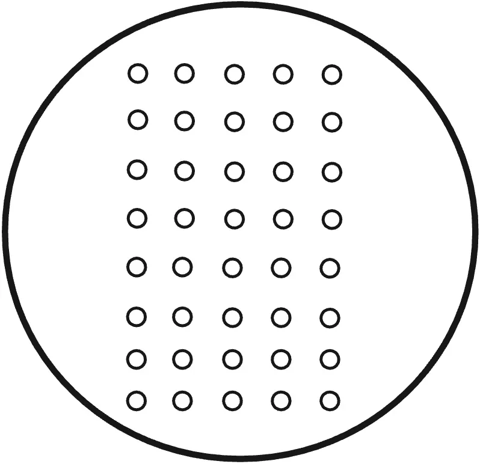
Recording every day
Vertical square plates. Observe for 10 days. Set up the black background platform and turn on the lights. Take the agar plates one by one out of the growth chamber and place them on the black background platform, bottom lid facing up. Take pictures, clearly recording the labels, with no reflections, avoiding water vapor covering the view of the plants. Place the agar plates back, tilted slightly to the back on the rack, in the growth chamber.
Horizontal round plates. Observe for 10 days. Take the agar plates one by one out of the growth chamber. Spray 70% EtOH on the agar plates and place them in the laminar flow hood. Unwrap the breathable tape. Place the agar plates on a black background platform, open lid, leaves facing up; on the last day, take out the lid and take the picture directly from the top view and measure fresh weight and chlorophyll data afterwards. Wrap a phone in plastic wrap and spray 70% EtOH before placing the phone inside the laminar flow hood. Take pictures, clearly recording the labels. Wrap breathable tape around the agar plates and place them back in the growth chamber.
Stress assays the vertical plate assay, step by step
Vertical plate assay (Phase 1, trehalose)
- Take the stack of agar plates wrapped in aluminum foil out of the refrigerator.
- Spray alcohol on the agar plates before placing them inside the laminar flow hood.
- Use a marker to draw a straight baseline along a ruler 5.5 cm from the top of the plate on the back of each salinity plate.
- With an alcohol marker, mark 9 dots along the baseline in equal distances. The square agar plate is 12 cm horizontally with 10 spaces between the borders of the plate and between each seedling, so 12/10 = 1.2 cm as distance between each seedling.
- Place the square plates vertically at a slight angle.
- Choose 9 germinated seeds after vernalization that have similar root lengths or germination status and align the endpoints of their roots to the line drawn on the plate.
- Seal the plates with breathable tape and label the incubation date with a marker before placing the vertical plates on the stacks in the growth chamber, slightly tilted towards the back.
The horizontal plate assay for Phases 2 and 3 and the heat stress test are named in the draft but their steps are not written yet.
Controls and quality control seven groups, and what each one rules out
| Control | What it tests |
|---|---|
| No NaCl, no protectant | Healthy baseline, no changes. All relative values are set against this group |
| NaCl, no protectant | How much damage the stress causes. This is the group the protectant must overperform to demonstrate effective rescue |
| No NaCl, plus protectant | Whether the protectant itself harms unstressed plants; for example, higher concentration dosage of protectants may have negative inhibitory instead of rescue effectiveness |
| Sterile water or TB medium instead of protectant | Equal liquid volume so the difference in liquid volume is not a hidden variable (submersion equality) |
| Commercial CH peptide and trehalose | Act as standardized performance control to compare against our engineered Bacillus subtilis released ACCD, LEA, and BoPep4, and act as positive control demonstrating protectants' proven rescue effectiveness |
| Western blot of the sprayed Bacillus subtilis preparation | Whether the protein we claim to apply is present |
| Filtered TB medium from empty-vector Bacillus subtilis | Whether an effect comes from the medium rather than the engineered protein |
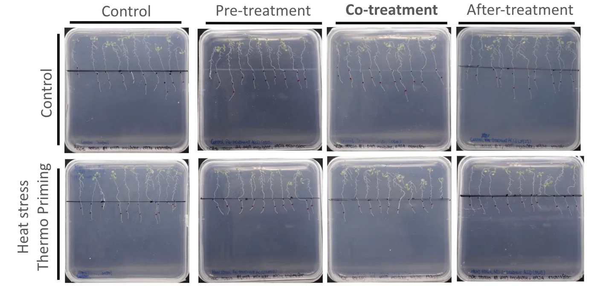
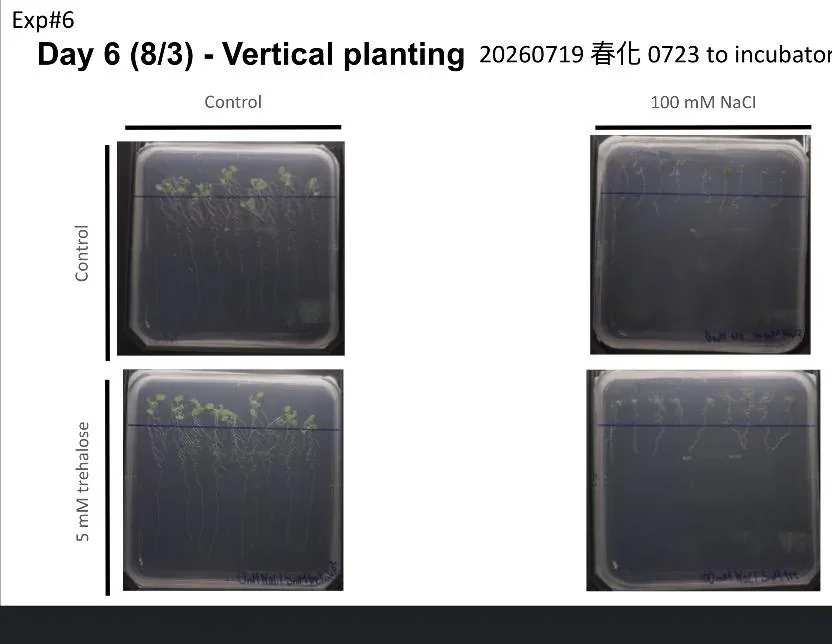
What went wrong, and what we changed
| Problem | Where | Fix or next step |
|---|---|---|
| Contamination (fungal, bacterial) | Sets 4, 5, 7, 8 | Stricter aseptic technique from Set 5; filter and spray preparations and seal plates with breathable tape inside the laminar flow hood for Set 8 repeats |
| Stress too severe (150 mM dried plants; 250 mM no recovery and severe chlorosis and bleaching) | Sets 1, 2, 5 | Narrowed to 75 and 100 mM NaCl for future experimental set testing |
| 1 mM trehalose toxic; 0.5 mM too weak | Sets 1 to 3 | Fine-tuned 0.125 to 0.5 mM in Set 3, then re-tested up to 10 mM in Set 5 |
| Inconsistent seedling growth | Pretest sets | Added a stratification stage of around 4 days before transferring plates to the growth chamber to synchronize plant growth and status |
| Weak or uneven seedlings; high sucrose causing dehydration | Early sets | Sucrose lowered from 3% to 1%; germination lengthened from 4 to 7 days |
| Transfer damage to fragile seedlings | Horizontal assays | Treatments added directly to existing plates |
| Uneven liquid coverage on agar | Phase 2 | 3 mL added then 2 mL removed (1 mL of liquid protectant or NaCl in plate); equal water volume in controls |
| No ACC deaminase in the sprayed preparation | Set 8 | Western blot of every batch before spraying |
| Plant roots struggle to penetrate the agar in horizontal plates, leading to deaths and lack of nutrients | Set 7 | Lowered the agar concentration from 0.8% to 0.6% |
| Too much humidity inside the agar plates and plants soaked in water | All sets | Place agar plates in the laminar flow hood to blow dry for 1 to 2 minutes to remove excess moisture |
| Root status and rosette leaf growth not obvious in observation pictures | Pretest sets | Place a black background under the agar plates in the laminar flow hood and wrap the phone in plastic to take clear, high resolution pictures for horizontal circular plates; place vertical square plates in a black background light box and use a professional camera for the daily record |
The agar platform is sensitive to stress and to protectant dose, has a clear rescue window near 100 mM NaCl, proved trehalose and the CH peptide as effective protectants, and gave evidence on application timing. Chlorophyll expressed relative to fresh weight can look high in small and stressed seedlings, so it must be read with fresh weight and the photographs.
Chlorophyll extraction
To assess the physiological response of Arabidopsis thaliana seedlings under stress, and evaluate protectant treatment rescue effectiveness in our project, chlorophyll extraction is introduced as a precise tool of measurement to strengthen the analysis of each experiment's results.
Chlorophyll is an essential pigment in the photosynthetic machinery of plants that plays a pivotal role in converting light energy into glucose. Ultimately, varying chlorophyll levels impact plant growth (Roberts, 2023). The metabolic pathways that govern the chlorophyll biosynthesis are complex, which abiotic stress such as salinity stress, drought, extreme temperature variations can substantially perturb these processes (Li et al., 2024).
As connected to our project, we mainly focus on two abiotic stress types: salinity and heat. Given this category, these abiotic stressors trigger the overproduction of reactive oxygen species, leading to lipid peroxidation and chlorosis. Hence, extracting the chlorophyll as a form of data readout and measurement allows quantification on the degree of chlorosis, and permits accurate evaluation of plant physiological response in our experiments that cannot be visually and directly assessed through bare eyes.
Total chlorophyll content
Chlorophyll a + b (mg g−1) = (8.02 × A663 + 20.20 × A645) × V / (1000 × fresh weight)
| Formula component | Purpose |
|---|---|
| A663 | The absorbance of the extract at a wavelength of 663 nm, which corresponds to the peak absorption of chlorophyll a |
| A645 | The absorbance of the extract at a wavelength of 645 nm, which corresponds to the peak absorption of chlorophyll b |
| 8.02 and 20.20 | Empirical absorption coefficients derived from simultaneous linear equations, mainly to prevent overlapping absorption spectra between A663 and A645 |
| 1000 | A conversion factor used to change micrograms to milligrams |
| V | Total volume of extraction solvent |
| Fresh weight | Initial mass of the fresh plant tissue sample, measured in grams |
Materials acetone, beads, a plate reader and a 96-well plate
| Material or chemical | Manufacturer | Specification | Amount |
|---|---|---|---|
| Experimented Arabidopsis thaliana seedlings on each agar plate | – | – | Horizontal: 40 seedlings per plate. Vertical: 12 seedlings per plate |
| Acetone | – | – | 4 mL of diluted 80% acetone per 15 mL centrifuge tube |
| Stainless steel beads | – | 304 and 314 grades | 4 beads per tube |
| 15 mL centrifuge tubes | Biosharp, BS-150-M-S | – | 1 tube to hold all seedlings in each individual experimental group |
| ELISA reader | Infitek MPR-A200HT | – | 1 |
| 96-well plate | BasicLife, BL6060 | – | 1 |
| Vortex machine | – | – | as needed |
| Tweezers | – | – | as needed |
| Weighing plate | – | – | as needed |
The draft records 4 beads per tube in the materials table and 10 in the procedure. Ten is what the procedure says to add.
Procedure from lifting the seedlings to reading A663 and A645
- Using a tweezer, lift and pick up all Arabidopsis plants simultaneously from the agar plate in a single motion. Be careful not to hurt the plants by squeezing the tweezer, and lift from below the leaf area.
- Put the plants on a tissue paper, lightly press to remove the agar sticking to the plants. Be careful not to press the leaf areas too hard.
- Place all plants in a weighing plate, weigh the fresh weight of Arabidopsis, a plate at a time.
- Pick up the plants and put them in a 15 mL centrifuge tube, taking care that the entire plant and the roots go in too.
- Label the group concentration and the respective fresh weight on the tube.
- Repeat these steps for as many times as the sets of Arabidopsis you are testing.
- Place 10 stainless steel beads in each of the centrifuge tubes, place in −80 °C for 10 minutes.
- Dilute acetone to 80%, add 4 mL to each tube.
- Wait for the chlorophyll to extract. You can use a vortex or shake vigorously to crush the plants to speed up the process. It is done when the plants are no longer green.
- Label what samples are in each well before loading. This is very important.
- Add the liquid to the 96-well microplate, 200 µL in each well, with three technical replicates per sample. Blank the OD on 200 µL of 80% acetone.
- Insert the 96-well plate in the ELISA reader and run the results through the equation above. Make sure to select the correct wavelength: A663 for chlorophyll a, A645 for chlorophyll b.
From the reader to a graph the raw table, the conversion sheet and the Prism settings
Paste the raw data directly onto the spreadsheet, ensuring each value follows its corresponding wavelength and replicate on the table.
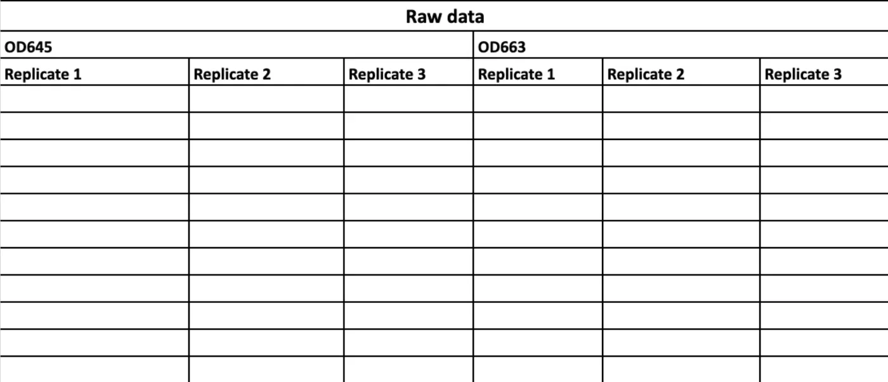
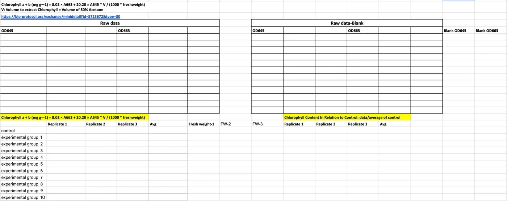
The chlorophyll content of each experimental set result is calculated through the formula above. Certainly, we further converted processed data in each replication into a relative chlorophyll content in relation to control, meaning to divide the chlorophyll data by control. We utilized Prism to turn processed data replicates into bar graphs, selecting "mean with SEM" as the standard error of the mean.
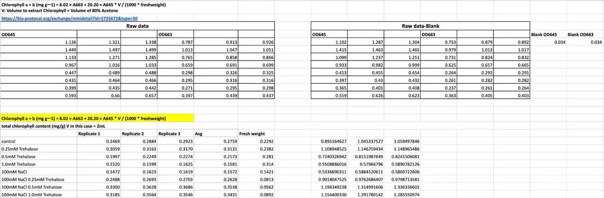
Results
Chlorophyll content maps out the data trend and visualizes seedlings' internal stress regulatory response among experiments.
Trehalose treatment at 0.25, 0.5 and 1.0 mM has an upward trajectory of rescue effectiveness combatting 100 mM NaCl. In phase 1 of trehalose and NaCl agar testing, we integrated chlorophyll content since conducting experiment set #4; through chlorophyll extraction, we were able to visualize the chlorophyll content among different groups. The relationship of trehalose dose between control and 100 mM NaCl conditions shows a conversely contrasting pattern: under baseline conditions, higher trehalose doses slightly depress baseline chlorophyll levels, whereas under 100 mM NaCl stress, they progressively rescue and enhance chlorophyll retention in a dose-dependent manner. Although 0.5 mM trehalose still outperforms other trehalose doses in terms of rescue effect, the overall trend demonstrates a progressive upward trajectory that indicates the trehalose' protective efficacy in mitigating salinity stress.
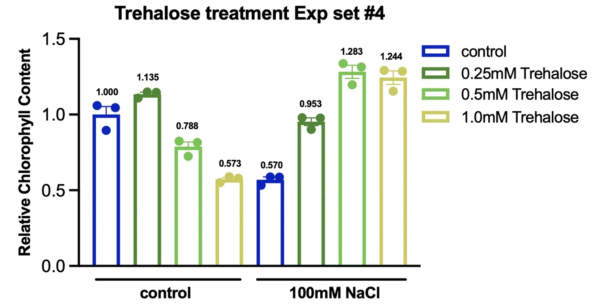
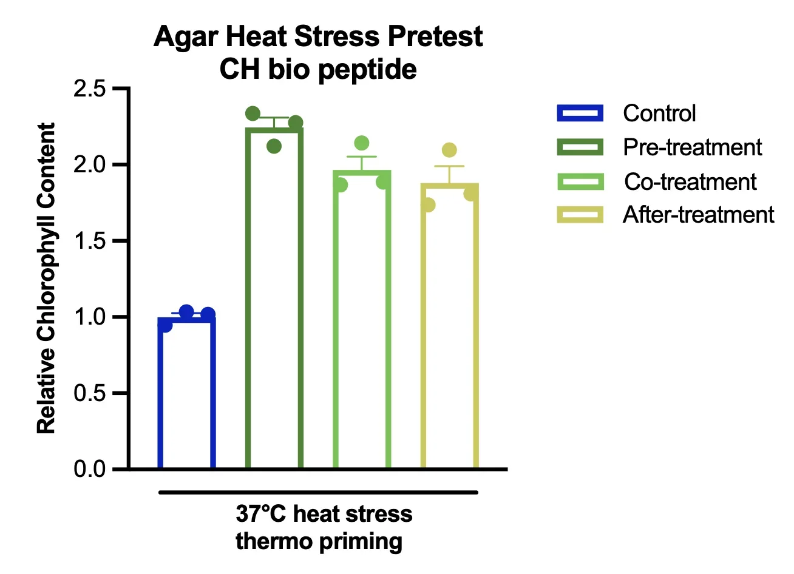
Read Figure 7 with the caution the agar section ends on: the values are per gram of fresh weight, and stressed seedlings weigh very little, so a group can read high on this chart while the plate photograph shows smaller plants. The heat pretest in Figure 8 is a single set and its control group is the only group without the peptide, so it sets the baseline; it does not test the peptide against a stressed, untreated plate.
The physical measurements of Arabidopsis thaliana
Alongside the chlorophyll extraction data collection, both fresh weight and root length data have been collected for selected experimental sets.
Fresh weight is most closely used to accompany chlorophyll extraction because the fresh weight of each experimental set is used to normalize the chlorophyll accordingly. On the other hand, primary length data was collected to observe the effect of salinity and respective protectant application on root behaviour. The expected behaviour of the primary roots was conducting halotropism, where roots pave their way through the agar as usual but specifically bending away from the salty patches to search for areas without osmotic stress (Zou et al., 2021). However, considering our entire agar plate was mixed with NaCl of different concentrations, the root length of respective agar plates was significantly affected and demonstrated intriguing differences between the application of NaCl and without.
Root length, materials and procedure a light box, a 3D printed rack and ImageJ, after Corrales et al. 2014
| Material | Amount |
|---|---|
| Experimented Arabidopsis thaliana seedlings on each agar plate | Horizontal: 40 seedlings per plate. Vertical: 12 seedlings per plate |
| Camera | 1 |
| Tweezers | as needed |
| Light box | 1 |
| 3D printed agar plate rack | 1 |
| Ruler | 1 |
- Turn off the lights.
- Place one plate of the experimental set into the 3D printed agar plate rack.
- Place the rack into the light box.
- Set up a ruler vertically next to the agar plate rack. This is used to precisely prevent warping of the images at a slanted angle and allow for accurate root length data collection.
- Set a 3 second timer on the camera.
- Press the snapshot button, and use a black sheet of cloth to cover the entrance of the light box, so the images have no reflection to interfere with data collection.
- Zoom into the captured image to ensure quality.
- Repeat steps 2 to 7 with each agar plate of the experimental set.
- Upload images into ImageJ.
- Set the scale of the agar plate (120 mm) using ImageJ: draw a straight line of known distance, then Analyze → Set Scale → known distance → unit of length → Global → OK.
- Measure the length of the primary root from the marked start position to the tip using the segmented line option, then press Control+M to measure.
- Save the measured data in the ROI manager.
- Repeat steps 11 and 12 for all the Arabidopsis plates.
- Select all of the measured data in the ROI manager and click Measure. The measured root length in mm should appear.
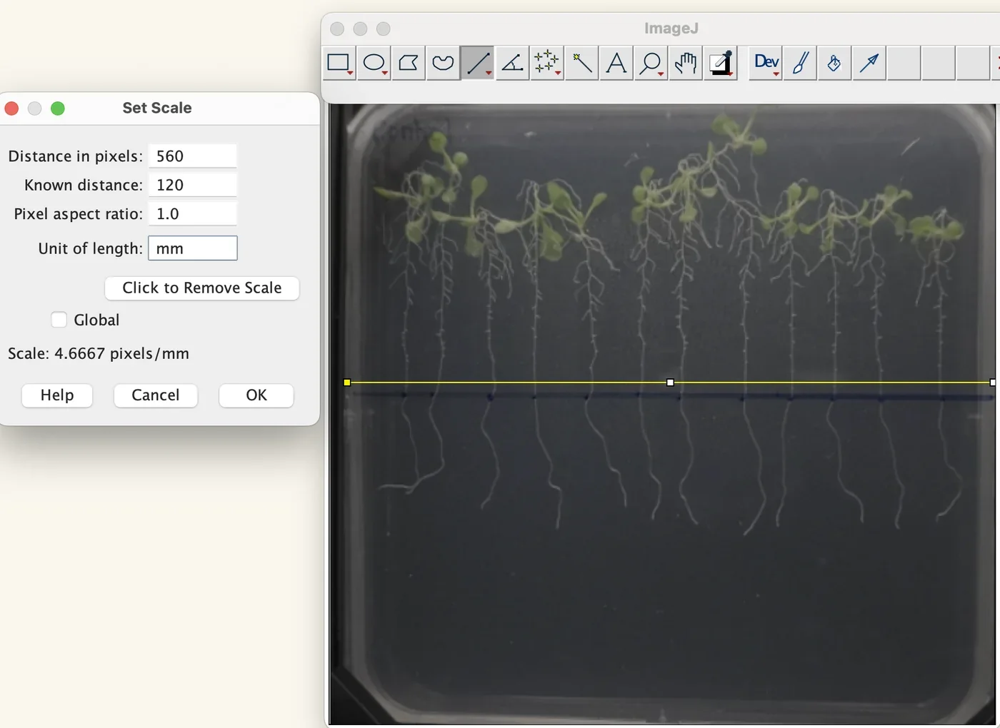
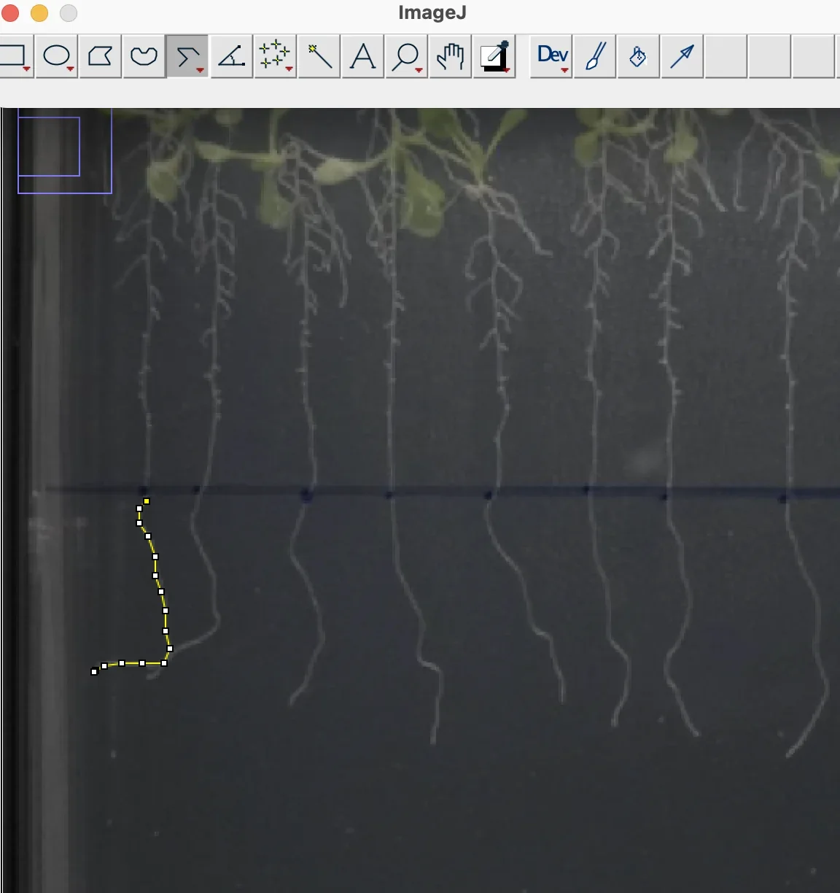
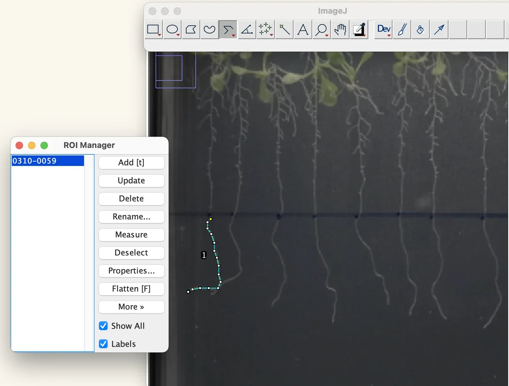
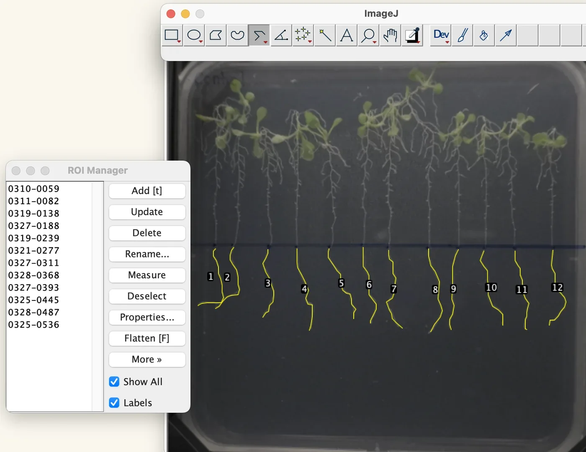
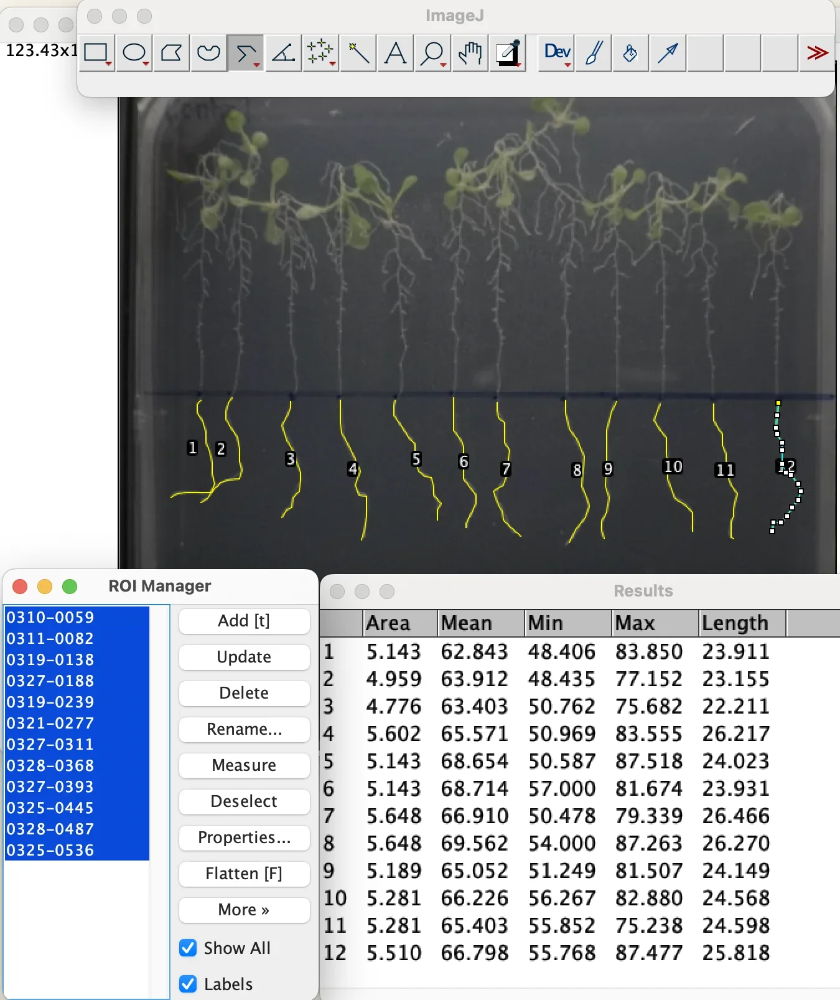
Fresh weight, materials and procedure tube, tare, tweezers, and into 85 °C before extraction
| Material | Manufacturer | Amount |
|---|---|---|
| Experimented Arabidopsis thaliana seedlings on each agar plate | – | Horizontal: 40 seedlings per plate. Vertical: 12 seedlings per plate |
| Electronic scale | – | 1 |
| Tweezers | – | as needed |
| Paper towel | – | 1 |
| 15 mL centrifuge tubes | – | 1 tube to hold all seedlings in each individual experimental group |
| 3D printed centrifuge tube holder | – | 1 |
- Label each centrifuge tube with the independent variable of the experimental set.
- Twist off the cap of the centrifuge tube and place it inside of the centrifuge tube holder.
- Calibrate the electronic scale with the centrifuge tube inside of the electronic scale.
- Use tweezers to lift a seedling off of the agar plates. Ensure no roots are stuck inside of the agar, and be careful not to damage the plants by squeezing the tweezers on the leaves; lift from the bottom side of each of the 2 leaves.
- Pass the roots back and forth on the paper towel for around 5 to 6 times so that the mold or contamination does not count into the fresh weight.
- Place the seedling into the centrifuge tube.
- Repeat steps 4 to 6 with all seedlings.
- Place the centrifuge tube rack with the centrifuge tube and seedlings inside of it onto the electronic scale.
- Close the door and wait for 30 seconds for calibration before recording the fresh weight data.
- Remove the centrifuge tube rack from the electronic lab scale.
- Twist the lid back on.
- Label the tube with its fresh weight.
- Repeat steps 1 to 12 with every agar plate with each independent variable of the experimental set.
- Place all centrifuge tubes containing seedlings into 85 °C for at least 1 hour before continuing with chlorophyll extraction.
The root length and fresh weight numbers themselves are not in this draft; the draft points to the team's working document for them. What the procedure above fixes is the part that decides whether those numbers mean anything: the 120 mm plate width as the scale, the baseline the root is measured from, and the blotting step before the balance.
Optogenetic control
Can the light plate deliver a controlled signal for optogenetic activation? ReLeaf depends on light as the external control signal connecting environmental prediction to biological production. We therefore tested the light plate to determine whether it could provide reproducible illumination across the culture area.
Matching the LEDs before trusting the plate
Internal resistor variance is a common problem in cheap, single-bulb LEDs. By individually measuring the lumen output value of each LED, we were able to determine which of them have matching internal resistance. Upon finding these similarities among our purchased LEDs, we are able to form 3 groups of 4 LEDs to form columns within our LPA structure for each wavelength we use (we use 2). This will allow us to use mathematical calculations to recalibrate all of the columns of lumens to match, so that we can later create low, medium, and high intensity light to create variance for our B. subtilis protectant production testing.
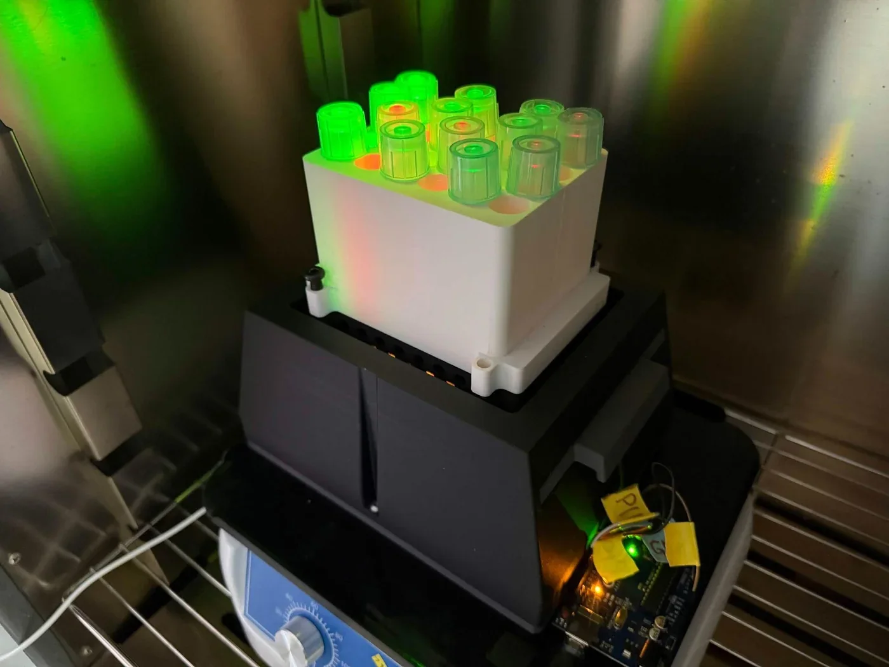
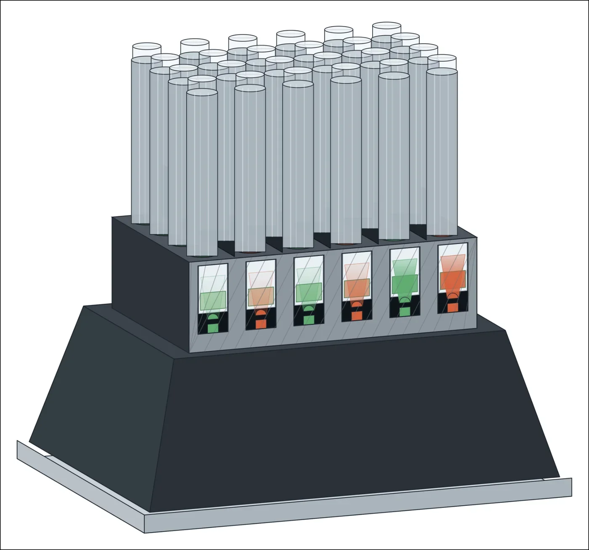
Experiment procedure twelve tubes, five sampling points, under minimal light
- Prepare LB media, 2 mL per tube in each well. Mix thoroughly.
- Prewarm the media to 37 °C.
- Inoculate the LB with WB800 + CcaSR culture. No prior dilution is needed since the culture is already at low density.
- Aliquot 2 mL of the culture into each of the twelve tubes.
- Place each tube in its position in the 24-well LPA plate, following the plate map. The remaining slots stay empty.
- Secure the plate to the LPA device.
- Start the light program, incubate at 37 °C, shaking, for 8 to 10 hours total. Set each column to its colour and light lux level listed in the plate map.
- Every 2 hours, and again at the 24 hour mark, take the plate off the LPA under minimal light. From each of the 12 tubes take 200 µL: 100 µL for OD600 and 100 µL for Western blot. Return the plate to the LPA.
- Keep the samples covered from ambient light and run the assays immediately upon removal. CcaSR responds to light extremely fast, only taking seconds to minutes.
Plate map. Six columns alternate red and green: red at 168 lux in columns 1, 3 and 5, and green at 220, 510 and 3850 lux in columns 2, 4 and 6. Each column carries CcaSR cultures and the remaining wells stay empty.
Results
The five sampling tables in the draft are combined here into one, by sampling time. The background column is the blank read at that time point; the three values in each cell are the three tubes of that column.
| Time | Background | Red 168 lux | Green 220 lux | Green 510 lux | Green 3850 lux |
|---|---|---|---|---|---|
| 2 h | 0.061 | 0.108, 0.108, 0.103 | 0.118, 0.089, 0.111 | 0.109, 0.115, 0.109 | 0.106, 0.108, 0.103 |
| 4 h | 0.059 | 0.115, 0.114, 0.120 | 0.122, 0.123, 0.119 | 0.123, 0.149, 0.126 | 0.121, 0.119, 0.120 |
| 6 h | 0.057 | 0.188, 0.194, 0.201 | 0.412, 0.383, 0.195 | 0.285, 0.195, 0.208 | 0.295, 0.188, 0.209 |
| 8 h | 0.059 | 0.251, 0.244, 0.256 | 0.293, 0.237, 0.250 | 0.290, 0.284, 0.259 | 0.269, 0.280, 0.269 |
| 24 h | 0.059 | 1.026, 0.969, 1.026 | 0.056, 0.083, 0.081 | 0.059, 0.008, 0.036 | 1.000, 1.020, 1.031 |
Through the first 8 hours the plate behaves: every column leaves the blank behind together, and growth does not track the green intensity, which is what a light plate should show when the light is a signal and not a nutrient. The 24 hour row does not follow from the 8 hour row. Red and the brightest green reach about 1.0, while green at 220 and 510 lux read at or below the blank, one of them at 0.008. Cultures do not go backwards, so that row is a reading or a handling fault, not a result, and the run has not been repeated.
The Western blot that accompanies these samples was run in two films, in the lane order LPA 0, G100 at 2, 4, 6 and 8 h, G12 at 2, 4, 6 and 8 h, and LPA 0, G2 at 2, 4, 6 and 8 h, R100 at 2, 4, 6 and 8 h. Neither scan in the draft carries a readable band, so neither is reproduced here and no expression claim rests on them.
Protectant assays
Two measurements are written up. The first decides how the plasmid gets into the chassis at all, and the second reads whether the enzyme that comes out the other end is doing any work.
Bacillus subtilis electroporation
To successfully engineer Bacillus subtilis to produce and secrete bioprotectants (such as ACC deaminase, LEA, and BoPep4), foreign plasmid constructs carrying these genetic sequences must be efficiently introduced into the host cells.
Electroporation is the application of a high-voltage electrical pulse across the cell membrane which creates transient physical pores that permit plasmid DNA uptake. While standard transformation methods in Bacillus subtilis often suffer from strain-dependent variable efficiency, electroporation provides a more controllable, high-efficiency technique critical for expressing recombinant stress-mitigating proteins.
In our project, the experimental protocol uses electrocompetent B. subtilis cells and evaluates transformation under different electroporation conditions. Because electroporation efficacy can be influenced by the electrical parameters used, different voltages were tested while maintaining the designated resistance and capacitance for each strain. Following electroporation, cells were allowed to recover for 3 hours before being plated on selective LB agar. Successful transformants were identified based on colony formation under antibiotic selection, and colony abundance was used as an indicator for comparing transformation efficiency between experimental conditions.
The purpose of this experiment was therefore to evaluate bacterial growth following electroporation and identify voltage conditions that produced comparatively high numbers of colonies. The results provide a basis for selecting suitable electroporation conditions for future plasmid transformation and genetic engineering of B. subtilis.
Our work provides several key contributions to facilitate research using Bacillus subtilis as a chassis for recombinant bioprotectant production.
What the measurement settles so far is narrow and useful: which of the two strains takes a plasmid at all, and the voltage, resistance and capacitance to start from for each. The rest of that contribution is still to be written.
Materials two strains, the pulser settings and the selection plates
| Material or chemical | Manufacturer | Specification | Amount |
|---|---|---|---|
| Electrocompetent cells | – | Bacillus subtilis 168 | as required |
| Electrocompetent cells | – | Bacillus subtilis WB800 | as required |
| Plasmid DNA | – | Desired plasmid for transformation | as required |
| Recovery medium | Difco 500 g; OmicsBio 500 g; OmicsBio 100 g | LB growth medium; 0.5 M sorbitol; 0.38 M mannitol | – |
| EP buffer | – | Electroporation buffer | – |
| Electroporation cuvette | Bio-Rad | 0.2 cm electrode gap | 1 per electroporation |
| Microcentrifuge tube | Lichen | 1.5 mL | – |
| 15 mL centrifuge tube | Biosharp | For mixing cells and plasmids | 1 per condition |
| Electroporator | Bio-Rad GenePulser Xcell, PC and CE modules | For electrical pulse delivery | 1 |
| LB agar plate | – | Selective plate containing erythromycin | 1 or more per condition |
| Erythromycin | Kaidin Technology Co., Ltd, 5 g | Selection antibiotic | – |
| Chloramphenicol | Bioshop | Selection antibiotic | – |
| Ice | – | For cooling cells and cuvettes | as required |
| Cell spreader | – | For plating transformed cells | 1 |
| Centrifuge | RWD Life Science, M1324R | Used for cell harvesting and washing | 1 |
| Water bath or incubator | Biopioneer, LM-570RD | 37 °C | 1 |
| Bunsen burner | – | Sterile handling | 1 |
Preparing electrocompetent cells 168 and WB800 differ in harvest density, washes and buffer
B. subtilis 168
- Dilute the overnight bacteria culture to 16-fold in growth medium.
- Incubate the diluted culture at 37 °C with shaking at 200 rpm until the OD600 reaches 0.85 to 0.95.
- Cool the culture on ice for 5 minutes.
- Centrifuge the cultures at 5,000 × g for 10 minutes.
- Carefully discard the supernatant and wash the cell pellet twice with ice-cold EP buffer.
- Resuspend the pellet in 1/20 of the original culture volume of electroporation medium.
- Aliquot the electrocompetent cells into pre-chilled microcentrifuge tubes.
- Store the electrocompetent cells at −80 °C until use.
B. subtilis WB800
- Dilute the overnight bacteria culture to 16-fold in growth medium.
- Incubate the diluted culture at 37 °C with shaking at 200 rpm until the OD600 reaches 2.2.
- Cool the culture on ice for 5 minutes.
- Centrifuge the cultures at 5,000 × g for 10 minutes.
- Carefully discard the supernatant and wash the cell pellet four times with ice-cold EP buffer with 1.5 mol/L trehalose.
- Resuspend the cells in 1/40 of the original culture volume of ice-cold EP buffer.
- Aliquot the electrocompetent cells into pre-chilled microcentrifuge tubes.
- Store the electrocompetent cells at −80 °C until use.
Electroporation of cells pulse, three hours of recovery, then count
- Prewarm SOC recovery medium to 37 °C and pre-chill a 0.2 cm electroporation cuvette.
- Mix the plasmid DNA with 100 µL of electrocompetent B. subtilis cells in a 15 mL centrifuge tube. Record the volume of plasmid DNA added.
- Set up the Gene Pulser Xcell electroporator according to the parameters below.
- Transfer the cell-DNA mixture into the pre-chilled electroporation cuvette and gently move the suspension to the bottom of the cuvette.
- Place the cuvette into the shock pod, close the lid, and apply the designated electroporation pulse.
- Immediately remove the cuvette and add 2 mL of prewarmed SOC recovery medium.
- Incubate the cells at 37 °C with shaking at 200 rpm for 3 hours.
- Centrifuge the cultures at 5,000 × g for 5 minutes.
- Place the recovered cells onto selective LB agar containing the appropriate antibiotic, either erythromycin or chloramphenicol.
- Incubate the plates overnight at 37 °C.
- Observe and count the resulting colonies to compare transformation efficiency among the different electroporation conditions.
| Strain | Voltage tested | Resistance | Capacitance |
|---|---|---|---|
| B. subtilis 168 | 2.1, 2.2, 2.3 kV | 300 Ω | 25 µF |
| B. subtilis WB800 | 2.1, 2.3, 2.5 kV | 250 Ω | 25 µF |
Results
Representative agar plates showing colony growth under the indicated experimental conditions. Each plate is labeled with the strain and construct, the selection condition, and the experimental condition used. Plates were incubated under the same conditions, around 37 °C, and colony growth was assessed by visual observation and colony counting.
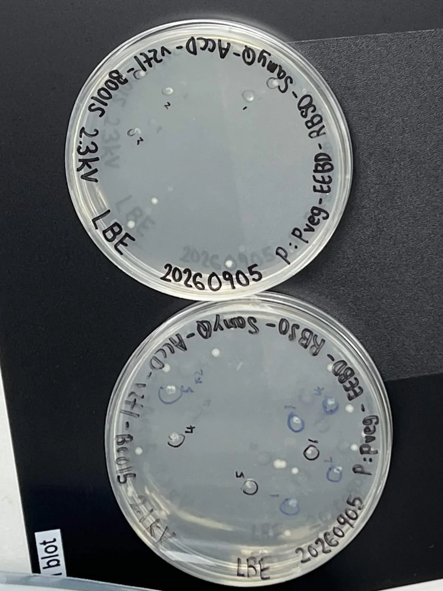
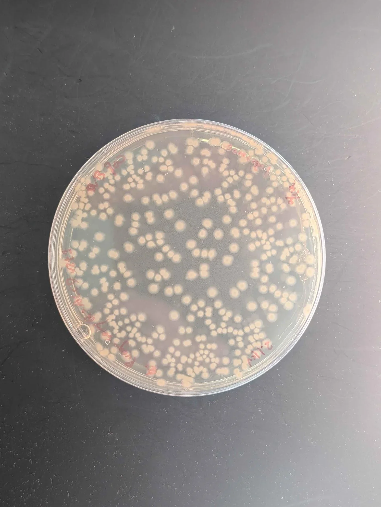
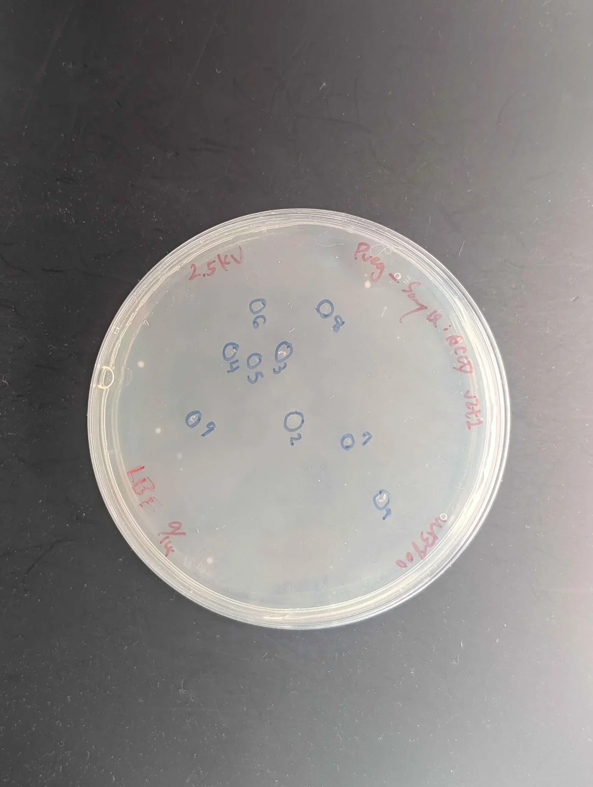
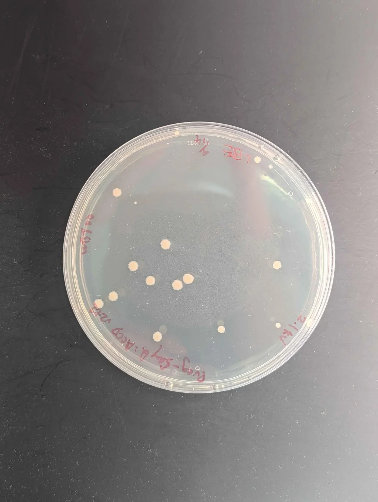
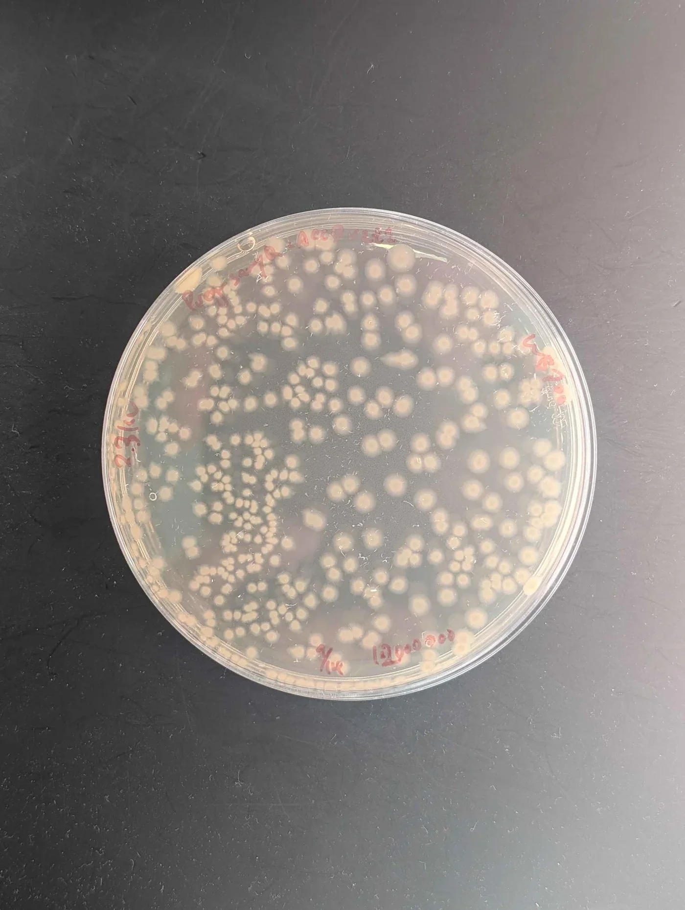
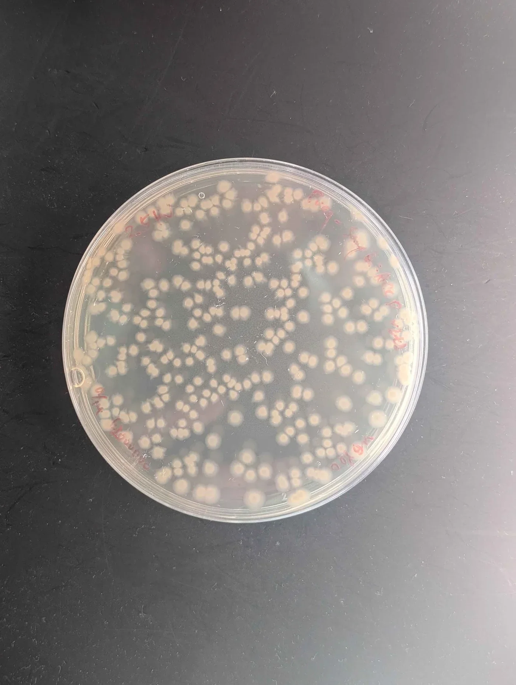
One plate is shown per condition. The draft carries further repeat plates of the WB800 v2t2 conditions, and its plate lettering repeats, so the figures here are keyed to strain, construct and voltage instead of to the draft's letters. Read as counts, the two strains are not close: strain 168 returns single colonies you can circle by hand at both voltages, while WB800 returns plates that have to be counted. No colony count has been written down yet, so the comparison across the three WB800 voltages stays visual.
Berthelot assay for ACC deaminase
In our project, 1-aminocyclopropane-1-carboxylate (ACC) deaminase derived from Pseudomonas putida UW4 was selected as a bioprotectant to mitigate abiotic stress in plants.
Exposure to environmental stresses, such as drought, salinity, and extreme temperatures, triggers the accumulation of the stress hormone ethylene (Dubois et al., 2018), which accelerates leaf senescence and abscission, inhibits primary and lateral root elongation (Růžička et al., 2007), induces programmed cell death (Drew et al., 2000), and impairs photosynthesis (Ceusters & Van De Poel, 2018), ultimately precipitating rapid plant decline. Because ACC serves as the precursor to ethylene biosynthesis, ACC deaminase produced by rhizosphere microorganisms degrades ACC into α-ketobutyrate and ammonia. This enzymatic cleavage depletes rhizosphere ACC levels, establishing a concentration gradient that drives root exudation of ACC and thereby reduces endogenous ethylene synthesis (Glick, 2014). To exploit this mechanism, Bacillus subtilis was engineered to secrete recombinant ACC deaminase and cultured in a bioreactor for mass production. To assess bioreactor yield and confirm the enzymatic activity of the secreted protein, we evaluated the degradation efficiency of ACC in crude bioreactor extracts using two biochemical assays targeting ACC degraded products: a 2,4-dinitrophenylhydrazine (DNPH) assay to quantify α-ketobutyrate accumulation (Penrose & Glick, 2003), and a Berthelot (indophenol blue) assay to determine ammonia concentrations.
Due to the unavailability of 2,4-dinitrophenylhydrazine (DNPH), the catalytic activity of the recombinant ACC deaminase was determined using the Berthelot assay, targeting the released ammonium (NH4+/NH3) as the analytical readout. The Berthelot reaction is based on the reaction between ammonia and hypochlorite (OCl−) to generate monochloramine, which subsequently reacts with sodium salicylate in the presence of sodium nitroprusside as a catalyst to produce an indophenol dye quantifiable by absorbance at 660 nm (A660) (Krom, 1980). However, several interfering factors were encountered under our specific assay conditions. First, rich medium components, notably yeast extract and free amino acids present in the Terrific Broth (TB) medium, exhibit non-specific chromogenic interference in the Berthelot reaction (Ngo et al., 1982). Furthermore, unreacted ACC substrate also reacts with the reagents to form an indophenol-like colored complex. To accurately quantify the ammonium released by enzymatic ACC cleavage, two preliminary optimization steps were undertaken: determining an optimal dilution factor for the TB medium or bioreactor crude extract to suppress matrix background signals sufficiently below the target analyte response, and constructing a substrate-compensated calibration curve in which ACC and NH4+ were combined at complementary molar ratios summing to the fixed initial substrate concentration, allowing A660 to be calibrated directly against fractional ACC conversion.
What the assay is useful for
The Berthelot assay is predominantly employed in water quality and environmental monitoring, encompassing the determination of ammoniacal nitrogen in surface water, seawater, and industrial wastewater, as well as the quantification of Kjeldahl nitrogen in digested samples (Searle, 1984). In clinical diagnostics, coupling urease activity with ammonia production has established this reaction as a classical method for assessing blood urea nitrogen.
Soil and agricultural science represent another domain historically reliant on this methodology. Key applications include quantification of soil inorganic nitrogen pools, wherein exchangeable ammonium ions are extracted with 1 to 2 M KCl and the supernatant directly subjected to indophenol chromogenesis, a standardized procedure for evaluating available nitrogen and soil fertility; total nitrogen analysis of plant and soil digests, where the sodium salicylate-based indophenol modification is compatible with both 2 M KCl soil extracts and acid digests, offering superior sensitivity over legacy phenol formulations while substantially mitigating operational hazards (Kempers & Zweers, 1986); measurement of net nitrogen mineralization and nitrification rates, fundamentally indexing the soil nitrogen cycle by tracking net shifts in ammoniacal nitrogen across incubation periods; determination of soil urease activity, quantifying ammonium liberated from soil incubated with urea substrate via modified indophenol chromometry, an approach widely adopted in soil enzyme profiling (Kandeler & Gerber, 1988); and evaluation of fertilizer efficacy and urease inhibitors, monitoring urea hydrolysis kinetics to assess the capacity of inhibitors to delay ammonia release and curb volatilization losses. Additionally, in screening plant growth-promoting rhizobacteria and biostimulants, microbial ammonia production itself serves as a hallmark trait of plant-beneficial capacity.
Within biochemistry and enzymology, the Berthelot assay acts as a universal coupled detection system for any enzymatic reaction releasing free ammonia. Consequently, it is broadly applicable for profiling the catalytic activities of ureases, glutaminases, asparaginases, and diverse amino acid or nucleoside deaminases (Searle, 1984).
In our application, ACC deaminase catalyzes the cleavage of ACC to liberate ammonium, which theoretically permits activity assays via the Berthelot method. In practice, however, severe analytical interferences arising from both the rich culture medium and the substrate itself preclude direct quantification. Here, we address and systematically resolve these matrix and substrate interferences, establishing the Berthelot assay as a viable analytical alternative to monitor ACC deaminase activity when DNPH is unavailable.
Materials per 10 mL of each reagent
| Chemical | Manufacturer | Amount per 10 mL |
|---|---|---|
| K2HPO4 | Shimakyu | 1.64 g |
| KH2PO4 | Cheng Yi Chemical Co., Ltd | as needed |
| KOH | Cheng Yi Chemical Co., Ltd | as needed |
| Pyridoxal 5'-phosphate | Swanson | 6.6 mg |
| 1-aminocyclopropane-1-carboxylic acid (ACC) | Santa Cruz, sc-202393 | 101 mg |
| Sodium salicylate | Emperor Chemical Co., Ltd | 0.64 g |
| NaOH | Cheng Yi Chemical Co., Ltd | 0.328 g |
| Trisodium citrate dihydrate | Cheng Yi Chemical Co., Ltd | 0.294 g |
| Sodium nitroprusside | – | 0.03 g |
| 5% NaOCl | Magic Amah Household (Taiwan) Co. | 1.12 mL |
Reagent preparation buffer, substrate, the two Berthelot reagents and the compensated standard
- 10× ACC deaminase reaction buffer. Dissolve K2HPO4 1.64 g and KH2PO4 0.8 g in 10 mL deionized water. Adjust pH by KH2PO4 or KOH until pH reaches 8.5. Add pyridoxal 5'-phosphate 6.6 mg and store at 4 °C away from light for 1 week.
- 0.5 M ACC. Dissolve 101 mg ACC in 2 mL deionized water. Store at −20 °C.
- Berthelot reagent A. Dissolve 0.64 g sodium salicylate, 0.128 g NaOH, 0.03 g sodium nitroprusside, and 0.294 g trisodium citrate dihydrate in 10 mL deionized water. Store at 4 °C away from light for 1 month.
- Berthelot reagent B. Mix 1.12 mL 5% NaOCl and 0.2 g NaOH. Add deionized water to 10 mL. Store at 4 °C for 1 week.
ACC-compensated calibration standard
- Heat-inactivated TB medium: heat 300 µL of cultured TB medium at 95 °C for 5 minutes.
- 0.5 M NH4Cl: dissolve 0.267 g NH4Cl in 10 mL deionized water.
- Solution A: mix heat-inactivated TB medium 100 µL, 10× reaction buffer 12 µL, and 0.5 M ACC 10 µL.
- Solution B: mix heat-inactivated TB medium 100 µL, 10× reaction buffer 12 µL, and 0.5 M NH4Cl 10 µL.
- Prepare the standard by combining A and B as below.
| Conversion | Solution A | Solution B | NH4+ |
|---|---|---|---|
| 0% | 100 µL | 0 µL | 0 mM |
| 10% | 90 µL | 10 µL | 4.1 mM |
| 20% | 80 µL | 20 µL | 8.2 mM |
| 40% | 60 µL | 40 µL | 16.4 mM |
| 60% | 40 µL | 60 µL | 24.6 mM |
| 100% | 0 µL | 100 µL | 41.0 mM |
Experiment procedure one hour at 30 °C, then thirty minutes of colour
- Sample 1 mL of cultured TB medium. Centrifuge at 23,444 g for 15 minutes at 4 °C.
- Transfer supernatant to new 1.5 mL microtubes and another 300 µL supernatant to new 1.5 mL microtubes.
- Heat the 300 µL supernatant at 95 °C for 5 minutes.
- Mix 100 µL supernatant with 12 µL 10× ACC deaminase reaction buffer and 10 µL 0.5 M ACC. Incubate at 30 °C for 1 hour.
- Heat the reaction at 95 °C for 5 minutes. Centrifuge at 23,444 g for 5 minutes.
- Transfer 10 µL reaction to new microtubes and add 490 µL sterile water.
- Transfer 20 µL diluted reaction to a 96-well plate.
- Prepare the ACC-compensated calibration standard and transfer 20 µL to the 96-well plate.
- Add 100 µL Berthelot reagent A and 100 µL Berthelot reagent B to the 96-well plate. Avoid light and incubate at room temperature for 30 minutes.
- Read the A660 by microplate reader.
Results
ACC forms an indophenol-like colored complex in the Berthelot assay. Although chromogenic interference by ACC in the Berthelot reaction has not been previously reported, ACC contains a primary amine moiety that is theoretically susceptible to indophenol dye formation. To evaluate this interference, NH4+ standard calibration curves were generated across varying background concentrations of ACC. As demonstrated below, robust quantification of NH4+ was achieved even against a 2 mM ACC background. Therefore, despite the intrinsic chromogenic contribution of ACC in the Berthelot assay, accurate quantification of ACC deaminase catalytic activity via NH4+ detection remains feasible, provided that the initial ACC substrate concentration is strictly controlled.
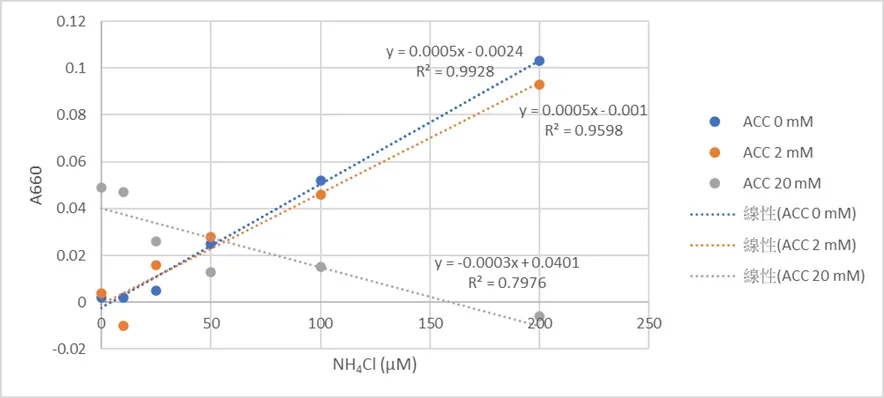
The 20 mM series is the result that sets the working limit. Its slope is negative, so at that substrate load the dye is no longer reporting ammonium at all and no conversion number taken there would mean anything. Everything this assay returns therefore has to sit at or below the 2 mM background, which is what the compensated standard above is for. The mechanism figure the draft reproduces from Yu et al. (2021) is not republished here; the reaction is in the reference.
Bioreactor assays
The reactor carries its own instruments, so these measurements are as much about the instrument as about the culture. Two of them have produced data and one of them is still a design with a single offline check behind it.
Dual light path inline photometer
We built an in-line flow-cell photometer that reads OD600 directly from our hollow-fiber bioreactor without ever needing to draw a sample.
OD600 is the field standard for bacterial density but is almost always measured through sampling, which not only interrupts the run it describes but is also a manual action that creates the opportunity for contamination or accidental measured value error, especially when placed in public use for small-scale farmers. So we moved the measurement into the loop itself. A 600 nm light beam passes through a 90/10 beam splitter diverting a part of the light path to a reference sensor before passing through our flow cuvette and main sensor. Doing this, along with our burst sampling with a MAD filter bubble-rejection software, the optical sensor is able to compete with costly, professional standard OD600 sensors like the BioDrop: a sensor costing $15,000, whereas ours costs around $150.
What another team can take from it
Our central contribution is a validated, calibration-free in-line OD600 measurement device. Our raw output already agrees with a $15,000 reference instrument, so another team can rebuild and use it directly. A device that requires the calibration against a benchtop spectrophotometer doesn't remove the pricey spectrophotometer from the workflow, while ours cuts that dependency. 4 main pieces of this photometer can be taken to be learned and reused by others.
- In-line, non-destructive geometry. Our flow cuvette sits in the circulating loop, outside of our tubing. No volume of medium needs to be removed, nor does anyone need to adjust or operate it once it's set up, and the tilt of the photometer ensures almost all bubbles that enter leave within a quarter of a second.
- Reference sensor normalisation. The use of a 90/10 beam splitter sends 10% of our light into a sensor that avoids the path of our medium sample. This allows us to set a calibration for our main sensor in the case of source-intensity variability. Some possible instances could be from inconsistent current (our PN2222 transistor mostly accounts for that) or LED degradation. Over a multi-week run though, precautions have to be set in place.
- Bubble-rejection filter. Each point of measurement from our photometer is determined by a burst of 16 data points. These data points are condensed by median and median absolute deviation (MAD), with a fence at median ± 3×MAD. By using the median twice, as our center and as our spread, we let large bubbles inflate its own fence and pass through as an outlier. The live rejection rate is reported to the user and when flagged as above 50%, triggers a hardware alarm that indicates inaccurate photometer data.
- Optogenetic-compatible wavelength measurement. 600 nm wavelength LEDs keep us on the standard for measuring turbidity, while simultaneously sitting right between the wavelengths of green (~535 nm) and red (~672 nm), the 2 actuation peaks for CcaS/CcaR. This ensures that our photometer measurements don't affect the activation or deactivation of our optogenetic circuit in B. subtilis.
Bill of materials one LED, two lux sensors, an Arduino and a 2 mm flow cuvette
| Component | Specification |
|---|---|
| LED | 1× 600 nm |
| Paralleling lens | 1× |
| Beamsplitter | 1× 90/10 |
| Lux sensor | 2× GY-302 |
| Resistors | 1× 330 Ω, 1× 1200 Ω, 1× 10000 Ω |
| Microcontroller | 1× Arduino Uno Q |
| PCB | 1× 2×8 cm |
| Flow cuvette | 1× 2 mm light path |
| Wires | 3× 12 in + 1 in 20AWG black, 3× red, 2× green, 2× blue; 1× 24 in red, 1× 24 in black |
| Heat shrink | 2× 2.0×45 mm tube |
| Transistor | 1× UTC PN2222 |
| 2510 connectors | 2× 5-pin female, 4× 2-pin female, 2× 5-pin male, 4× 2-pin male, 18× terminal crimp pin |
| DuPont connections | 10× female crimp pin, 2× 5-pin female housing |
| Male header pins | 10× bent, all connected together |
| Filament | Black PLA and black TPU (soft) |
Unit and total costs are left blank in the draft; the $150 figure above is the team's own estimate for the whole instrument.
Mechanical and electrical build TPU-lined slots, two supply rails, and five wires to the Arduino
Mechanical
Our sensors, splitter, and lens, all sit in TPU-lined slots in the PLA body. This provides a tight fit that doesn't crush our components and is the one change that created the most improved stability across long runs. The body splits from the base at a diagonal angle to avoid extra supports during printing and the covers on our photometer are snap-fitted to allow for easy service and access while also keeping the light path from being affected by external changes.
Electrical
Sensors run at 3.3 V and the LED at 5 V on separate supplies, since the LED supply is expected to rise as the bioreactor scales; a MOSFET switches the LED independently so the source is not held on continuously. The two BH1750 sensors share SDA and SCL. Grounds are commoned on a soldered PCB, leaving five connections (SDA, SCL, D3, 3.3 V, 5 V, GND) to the Arduino UNO Q, which runs the acquisition loop standalone with no tethered computer.
Acquisition and filtering 16 readings, a median fence, one logged point every 10 minutes
- Discard 2 warm-up readings from each sensor.
- Take a burst of 16 readings per sensor.
- Compute the median of the burst.
- Compute the median absolute deviation (MAD), the median of the absolute distances of each reading from that median.
- Reject any reading outside median ± 3·MAD.
- If more than 50% of readings are rejected, retry and flag the point; the dashboard displays the live rejection rate in red and reports excessive bubbling to the user.
- Log the surviving result every 10 minutes.
The median is used for both centre and spread deliberately. A bubble produces one or two readings far above the true value; a mean would be dragged upward and a standard deviation inflated, so the outlier would widen its own acceptance window and survive. Median and MAD are insensitive to a few extreme points, so the fence stays tight and the bubble is rejected.
SiO₂ microsphere cross-validation the written protocol: two photometers in series against a benchtop reference
Objective
To evaluate the response of our inline photometers across a range of optical densities, we designed a calibration experiment using monodisperse silicon dioxide (SiO₂) microspheres. The experiment compares two inline photometers installed in series in a recirculating loop with a benchtop spectrophotometer measuring OD₆₀₀ at a standard 1 cm path length.
SiO₂ microspheres provide a particle-based scattering standard with a specified particle size and stock concentration. By gradually increasing their concentration in the loop, we can examine how each inline photometer responds to increasing turbidity and determine how its readings relate to the benchtop reference. This allows us to assess measurement consistency and establish a conversion to reference OD₆₀₀ within the experimentally validated linear range.
Materials and setup
The experiment uses a monodisperse SiO₂ microsphere suspension (Tomicro; mean particle diameter 1 µm; stock concentration 25 mg/mL), deionized water, a peristaltic pump, a stirred reservoir, two inline photometers, and a benchtop spectrophotometer. The microsphere stock is diluted with deionized water to prepare a working suspension of 2.5 mg/mL. The two inline photometers are connected in series in a recirculating loop. Continuous stirring helps keep the microspheres suspended, while circulation allows the same suspension to pass through both optical measurement points.
Experimental procedure
- Establish the blank. Fill the system with deionized water, remove visible air bubbles, and circulate the liquid for at least three complete loop turnovers. Record the blank readings from both inline photometers. Measure a deionized-water blank on the benchtop spectrophotometer as well.
- Increase the microsphere concentration. Conduct up to 50 dosing cycles. In each cycle, add 1 mL of thoroughly mixed working suspension to the reservoir, restoring the liquid volume after the preceding 1 mL sample withdrawal.
- Allow the readings to stabilize. Keep the pump and stirrer running and wait at least three loop turnovers before recording the readings from both inline photometers.
- Measure the reference OD₆₀₀. Withdraw a 1 mL sample from the reservoir and measure it promptly using the benchtop spectrophotometer. Discard the sample after measurement.
- Repeat and record. Repeat the dosing, stabilization, and measurement sequence until the planned concentration range is covered. Record all raw measurements and any deviations, including bubbles, settling, dilution errors, or readings outside the instrument's linear range.
The blank and each subsequent measurement form paired observations across the two inline photometers and the benchtop reference. These paired data allow direct comparison of the instruments at corresponding stages of the experiment.
Concentration calculations
Because each cycle replaces a 1 mL sample with 1 mL of working suspension, the concentration increases cumulatively rather than by a constant amount. For a well-mixed system with total liquid volume V, the theoretical concentration after n dosing cycles is
Cn = Cstock × [1 − ((V − 1)/V)n]
where Cstock is the working suspension concentration and volumes are expressed in millilitres. Under the protocol's assumed conditions of V = 50 mL and Cstock = 2.5 mg/mL, the theoretical concentration after 50 cycles is approximately 1.590 mg/mL. The theoretical OD₆₀₀ estimates are useful for planning the experiment, but they are not substitutes for measured values. Particle scattering depends on instrument geometry and suspension properties, and multiple scattering can cause deviations from linearity at higher concentrations.
Data analysis and calibration
For each dosing cycle, plot the readings from both inline photometers and the benchtop spectrophotometer against the calculated SiO₂ concentration. Identify the range over which each instrument's response is approximately linear, and fit a linear regression using only the appropriate data points. Use the benchtop spectrophotometer as the external reference to establish a conversion from each inline photometer's reading to reference OD₆₀₀. Evaluate the fits using the coefficient of determination and residual standard deviation. Compare the two inline photometers to identify any systematic differences that may arise from sensor position, flow conditions, or optical design. Measurements outside the validated linear range should be flagged rather than automatically included in the regression. The final calibration coefficients and usable measurement range should be reported only after experimental data have been collected and analyzed.
Quality control and limitations
- Sedimentation. Continuously stir the reservoir and measure withdrawn samples promptly.
- Air bubbles. Remove bubbles before recording measurements because they can introduce scattering artifacts.
- Unequal readings between inline photometers. Investigate possible positional effects, settling, or differences between the optical measurement channels.
- Volume errors. Maintain consistent pipetting because small errors can accumulate across repeated dosing cycles.
- Limited linear range. At high particle concentrations, multiple scattering may cause deviations from the expected linear relationship.
This experiment characterizes the optical response of the photometers to SiO₂ microspheres. It does not, by itself, establish that the same conversion applies directly to bacterial cultures, whose optical properties may differ. Further validation with the intended culture medium and biological samples is necessary before applying the calibration to bioreactor monitoring.
Results against the reference instrument
The raw, uncalibrated photometer output agrees with the BioDrop to a median paired difference of 3.8% and tracks the TiO₂ mass standard at least as closely as the reference instrument (R² = 0.9999 photometer against R² = 0.9998 BioDrop).
We ran two different iterations of the test against the reference instrument and both agree with the reference independently of each other. We had to exclude two singular points on objective grounds: both were BioDrop readings. We likely had a handling error in the first test and had a monotonicity violation in the second, implying a genuine mistake. Removing both didn't change our photometer readings at all and only made the BioDrop readings more consistent to the other data points.
We didn't calibrate to our BioDrop because the runs showed we didn't need to. Against the mass standard, the BioDrop is slightly less linear than our own photometer, so fitting it would tie our readings to the instrument's own errors when we're already in agreement within a few percent. Therefore, we treat calibration as unnecessary.
That is the TiO₂ comparison. The SiO₂ cross-validation above is a written protocol with no results behind it yet, and the simplified photometer it is meant to compare against the dual-path build has not been written up, so the claim that holds today is the one made against TiO₂ and the BioDrop.
Transmembrane pressure and flowrate meter
Flow and transmembrane pressure were measured together, alongside our pump and specific dials and outputs.
Flow through the fiber lumens sets the wall shear that sweeps the membrane. Transmembrane pressure is the mean lumen pressure minus the shell pressure halved, which drives permeation through the Darcy-Sterling relation. For scaling up bioreactors, mass and heat transfer are both important aspects to consider. This project also needs to keep light transfer in mind, as our system relies on optogenetic control.
How flow was measured, three ways
For measuring flowrate, we first set the pump dial and collect outflow in a measuring cylinder over fixed time intervals, with only a tube and no membrane connected. The pump covers dials from 0 to 100, and the flowrate was tested every 10 dials. Three trials were conducted per setting, except for output levels 70 to 100.
August 14, we connected the hollow fiber membrane to test both the flowrate and transmembrane pressure simultaneously. At this stage flow rate was still measured manually. Similarly, we set up the dial and collected outflow over fixed time intervals. This time, however, we tested output levels every 2 dials from 10 to 24 instead, where we are most likely to operate. Three rounds were conducted, all of which had three trials.
Finally, on August 16 we turned to using a flow meter instead of manually testing, due to results being too dependent on the operator's technique. Two configurations were tested at the same pump settings (10 to 24% output): a Background configuration, in which a plain silicone tubing replaced the membrane module while every valve, fitting, and flow cuvette remained in place, and an HFM configuration, in which the actual hollow-fiber membrane module was installed with everything else unchanged.
An experiment was conducted for validating the accuracy of the flow meter, which works on a Hall-effect principle. A small magnet embedded in an internal rotor spins as water flows through it, and a stationary sensor mounted beside the rotor detects the resulting oscillation in magnetic field strength as the magnet passes by. The frequency of this oscillation is then converted into the corresponding flow rate. We ran the test with a flow meter operating while simultaneously measuring the outflow manually, same method as previously used. Results show strong goodness of fit, with coefficient of determination reaching 0.995.
How pressure was measured
As for transmembrane pressure measurement, three pressure sensors were installed at the feed, retentate, and permeate ports of the hollow fiber membrane module. Feed measured pressure as the medium entered the lumen side, retentate measured pressure as it exited the lumen side, and permeate measured pressure on the shell side where fluid passed through the membrane. The feed and retentate readings were used to calculate the transmembrane pressure using the standard approximation TMP = (Pfeed − Pretentate) / 2. We read the pressure transducer, which recorded psi and converted them to bar.
The pressure transducer outputs a current signal, with a native range of 0 to 1 A. It originally converts to 5 V, the intensity would overwhelm our sensor. Therefore, two resistors were used when converting this current output into a voltage, producing a 0 to 3.3 V signal compatible with our microcontroller's analog input instead.
Results
| Pump output | Trial 1 | Trial 2 | Trial 3 | Mean, mL/min |
|---|---|---|---|---|
| 10 | 103 | 100 | 98 | 100.3 |
| 20 | 315 | 312 | 315 | 314 |
| 30 | 536 | 540 | 538 | 538 |
| 40 | 760 | 764 | 768 | 764 |
| 50 | 978 | 975 | 984 | 979 |
| 60 | 1131 | 1140 | 1128 | 1133 |
| 70 | 1260 | not run | not run | 1260 |
| 80 | 1360 | not run | not run | 1360 |
| 90 | 1415 | not run | not run | 1415 |
| 100 | 1535 | not run | not run | 1535 |
The three 14 August series in full kept on the page because the failure is the finding
| Output | mL/min | psi | bar |
|---|---|---|---|
| 10 | 140 | 1.390 | 0.09583 |
| 12 | 160 | 1.817 | 0.12527 |
| 12 | 165 | 2.067 | 0.14251 |
| 14 | 210 | 1.553 | 0.10707 |
| 14 | 210 | 2.666 | 0.18381 |
| 16 | 255 | 2.214 | 0.15264 |
| 16 | 255 | 3.3365 | 0.23004 |
| 16 | 255 | 2.673 | 0.18429 |
| 18 | 327 | 2.781 | 0.19174 |
| 18 | 305 | 2.436 | 0.16795 |
| 18 | 320 | 3.0136 | 0.20778 |
| 18 | 320 | 2.427 | 0.16733 |
| 20 | 355 | 3.239 | 0.22332 |
| 20 | 357 | 3.455 | 0.23821 |
| 22 | 405 | 3.732 | 0.25731 |
| Output | mL/min | psi | bar |
|---|---|---|---|
| 10 | 115 | 0.2003 | 0.01381 |
| 10 | 120 | 0.2825 | 0.01947 |
| 10 | 130 | 0.3339 | 0.02302 |
| 12 | 170 | 0.5282 | 0.03641 |
| 12 | 160 | 0.4203 | 0.02897 |
| 12 | 160 | 0.5633 | 0.03883 |
| 14 | 200 | 0.5225 | 0.03602 |
| 14 | 200 | 0.7708 | 0.05314 |
| 14 | 205 | 0.7393 | 0.05097 |
| 16 | 253 | 0.8101 | 0.05585 |
| 16 | 264 | 0.9423 | 0.06496 |
| 16 | 254 | 0.8818 | 0.06079 |
| 18 | 307 | 1.1805 | 0.08139 |
| 18 | 290 | 0.8807 | 0.06072 |
| 18 | 295 | 0.9339 | 0.06439 |
| 20 | 345 | 0.9324 | 0.06428 |
| 20 | 350 | 1.1345 | 0.07822 |
| 20 | 345 | 1.1684 | 0.08055 |
| 22 | 395 | 1.26 | 0.08687 |
| 22 | 420 | 1.1794 | 0.08131 |
| 22 | 405 | 1.1339 | 0.07817 |
| Output | mL/min | psi | bar |
|---|---|---|---|
| 10 | 110 | 0.537 | 0.03702 |
| 10 | 120 | 0.7915 | 0.05457 |
| 10 | 120 | 0.604 | 0.04164 |
| 12 | 150 | 0.8135 | 0.05608 |
| 12 | 155 | 0.6915 | 0.04767 |
| 12 | 160 | 1.2115 | 0.08352 |
| 14 | 205 | 0.6635 | 0.04574 |
| 14 | 200 | 0.624 | 0.04302 |
| 14 | 205 | 1.5225 | 0.10497 |
| 16 | 250 | 2.0139 | 0.13885 |
| 16 | 239 | 2.0808 | 0.14346 |
| 16 | 240 | 1.9742 | 0.13611 |
| 18 | 280 | 2.155 | 0.14858 |
| 18 | 284 | 2.3113 | 0.15935 |
| 18 | 283 | 2.2592 | 0.15576 |
| 20 | 337 | 3.0403 | 0.20962 |
| 20 | 330 | 2.8888 | 0.19917 |
| 20 | 335 | 2.6403 | 0.18204 |
| 22 | 394 | 3.4089 | 0.23503 |
| 22 | 395 | 3.518 | 0.24255 |
| 22 | 387 | 3.219 | 0.22194 |
| Pump output | Background Q (mL/min) | Background ΔP (psi) | Background ΔP (bar) | HFM Q (mL/min) | HFM ΔP (psi) | HFM ΔP (bar) |
|---|---|---|---|---|---|---|
| 10 | 119.878 | 0.3434 | 0.02367 | 113.368 | 0.9278 | 0.06397 |
| 12 | 170.724 | 0.7844 | 0.05408 | 163.282 | 1.4939 | 0.10300 |
| 14 | 216.416 | 1.1561 | 0.07971 | 215.850 | 2.0711 | 0.14279 |
| 16 | 274.849 | 1.4498 | 0.09996 | 263.323 | 2.6928 | 0.18566 |
| 18 | 317.333 | 2.0736 | 0.14297 | 312.731 | 3.9687 | 0.27363 |
| 20 | 349.582 | 2.4054 | 0.16585 | 355.193 | 4.3871 | 0.30248 |
| 22 | 395.225 | 2.8877 | 0.19910 | 401.328 | 5.5576 | 0.38318 |
| 24 | 440.428 | 3.5203 | 0.24271 | 450.065 | 6.5660 | 0.45271 |
The 16 August series is the one to build on. Taking the background away leaves the module's own contribution, which rises from 0.04 bar at dial 10 to 0.21 bar at dial 24, and the two flow columns agree within a few per cent at every setting, which is what the Hall-effect meter was brought in to fix. Note what the figure is and is not: it is measured between feed and retentate, along the lumen, so it is a pressure drop around the loop and not a pressure difference across the membrane wall.
Hollow fiber membrane breach detector
The hollow fiber is where the culture and harvest stream touch, and a 0.2 µm pore is what keeps B. subtilis on the lumen side. If breached, the cells would be able to come through, so a detector is installed on the shell side to watch for signs that may indicate unwelcomed particles.
Design only, not built yet. It currently rests on an offline proxy that was run once. During version 1, 2 mL was drawn from the shell side and spread on LB agar, and no colonies were recovered, so no culturable B. subtilis reached the shell side in that run. It is a single plating, and the replicate count, incubation time and incubation temperature were not recorded.
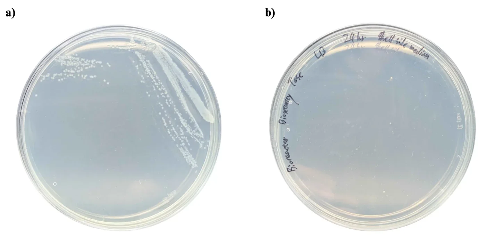
No detectable B. subtilis colonies were observed in the shell-side sample under the tested conditions. This provides preliminary evidence that the hollow-fiber membrane retained bacterial cells during the tested run.
What this plate can carry is a containment claim for one run; it cannot stand in for the detector, because a plate takes a day to answer and an instrument has to answer while the reactor is running. The build is on Hardware → Bioreactor and the containment argument it belongs to is on Safety.
Not measured yet
Nine measurements are planned and named in our protocol set but have no method or result written against them. They are listed here rather than given a block of their own, because a five-part write-up with nothing in it is the one thing this page must not do.
On the plant side
- MDA level, for lipid peroxidation
- Total protein level
- Relative gene expression
On the protectant side
- Purifying the secreted protein from liquid culture
- Western blot, as a method write-up
- ELISA
- DNPH assay, which the Berthelot assay replaced
On the bioreactor side
- Simplified photometer, and its comparison against the dual-path build
- Bioreactor leakage detector
- Turbidity meter for bacterial escape
What the page can support today: a plant platform with a known working window and a written failure record, a light plate matched before use with eight clean hours of growth data behind it, a transformation route that separates WB800 from strain 168 by eye, an activity assay with its own interference characterised and its working limit stated, an inline photometer that agrees with a $15,000 instrument without being calibrated against it, and one pressure and flow series that survives. What it does not support is any claim resting on the 14 August pressure run, the 24 hour optical densities, the unreadable blots, or the three safety instruments that exist only as drawings.
References
- Auverlot J, et al. Thermopriming in Arabidopsis thaliana. 2025.
- Castillo-Hair SM, Baerman EA, Fujita M, Igoshin OA, Tabor JJ. Optogenetic control of Bacillus subtilis gene expression. Nature Communications. 2019;10:3099. doi:10.1038/s41467-019-10906-6
- Ceusters J, Van De Poel B. Ethylene exerts species-specific and age-dependent control of photosynthesis. Plant Physiology. 2018;176(4):2601-2612. doi:10.1104/pp.17.01706
- Cheng M-C, et al. Stress-response gene expression in Arabidopsis under NaCl. 2013.
- Corrales A, Carrillo L, Nebauer S, Renau-Morata B, Sánchez-Perales M, Fernández-Nohales P, Marqués J, Granell A, Pollmann S, Vicente-Carbajosa J, Molina R, Medina J. Salinity assay in Arabidopsis. Bio-protocol. 2014;4(16). doi:10.21769/bioprotoc.1216
- Drew MC, He C-J, Morgan PW. Programmed cell death and aerenchyma formation in roots. Trends in Plant Science. 2000;5(3):123-127. doi:10.1016/S1360-1385(00)01570-3
- Dubois M, Van Den Broeck L, Inzé D. The pivotal role of ethylene in plant growth. Trends in Plant Science. 2018;23(4):311-323. doi:10.1016/j.tplants.2018.01.003
- Gerhardt KP, Olson EJ, Castillo-Hair SM, Hartsough LA, Landry BP, Ekness F, Yokoo R, Gomez EJ, Ramakrishnan P, Suh J, Savage DF, Tabor JJ. An open-hardware platform for optogenetics and photobiology. Scientific Reports. 2016;6:35363. doi:10.1038/srep35363
- Glick BR. Bacteria with ACC deaminase can promote plant growth and help to feed the world. Microbiological Research. 2014;169(1):30-39. doi:10.1016/j.micres.2013.09.009
- Haller DJ, Castillo-Hair SM, Tabor JJ. Optogenetic control of B. subtilis gene expression using the CcaSR system. In: Baumschlager A, editor. Optogenetics: Methods and Protocols. Methods in Molecular Biology, vol 2840. New York: Humana; 2025. p. 1-17. doi:10.1007/978-1-0716-4047-0_1
- Honma M, Shimomura T. Metabolism of 1-aminocyclopropane-1-carboxylic acid. Agricultural and Biological Chemistry. 1978;42(10):1825-1831. doi:10.1271/bbb1961.42.1825
- Kandeler E, Gerber H. Short-term assay of soil urease activity using colorimetric determination of ammonium. Biology and Fertility of Soils. 1988;6(1). doi:10.1007/BF00257924
- Kempers AJ, Zweers A. Ammonium determination in soil extracts by the salicylate method. Communications in Soil Science and Plant Analysis. 1986;17(7):715-723. doi:10.1080/00103628609367745
- Kim S, et al. Trehalose protects Arabidopsis under salinity stress. 2025.
- Krom MD. Spectrophotometric determination of ammonia: a study of a modified Berthelot reaction using salicylate and dichloroisocyanurate. The Analyst. 1980;105(1249):305. doi:10.1039/an9800500305
- Lee S, et al. Thermopriming protocols and bacterial effects on Arabidopsis stress tolerance. 2023.
- Li X, Zhang W, Niu D, Liu X. Effects of abiotic stress on chlorophyll metabolism. Plant Science. 2024;342:112030. doi:10.1016/j.plantsci.2024.112030
- Murashige T, Skoog F. A revised medium for rapid growth and bio assays with tobacco tissue cultures. Physiologia Plantarum. 1962;15(3):473-497.
- Ngo TT, Phan APH, Yam CF, Lenhoff HM. Interference in determination of ammonia with the hypochlorite-alkaline phenol method of Berthelot. Analytical Chemistry. 1982;54(1):46-49. doi:10.1021/ac00238a015
- Penrose DM, Glick BR. Methods for isolating and characterizing ACC deaminase-containing plant growth-promoting rhizobacteria. Physiologia Plantarum. 2003;118(1):10-15. doi:10.1034/j.1399-3054.2003.00086.x
- Roberts J. The role of chlorophyll in photosynthesis and plant growth. American Journal of Biological Sciences. 2023;4(2):6-10. doi:10.71465/ajbs2191
- Rolly NK, et al. Arabidopsis stress-response gene expression under NaCl. 2020.
- Růžička K, Ljung K, Vanneste S, Podhorská R, Beeckman T, Friml J, Benková E. Ethylene regulates root growth through effects on auxin biosynthesis and transport-dependent auxin distribution. The Plant Cell. 2007;19(7):2197-2212. doi:10.1105/tpc.107.052126
- Schluepmann H, et al. Trehalose-6-phosphate and growth arrest in Arabidopsis. 2004.
- Searle PL. The Berthelot or indophenol reaction and its use in the analytical chemistry of nitrogen. A review. The Analyst. 1984;109(5):549. doi:10.1039/an9840900549
- Yu X, et al. The mechanism of the Berthelot assay for quantifying ammonia. 2021.
- Zou Y, Zhang Y, Testerink C. Root dynamic growth strategies in response to salinity. Plant, Cell & Environment. 2021;45(3):695-704. doi:10.1111/pce.14205
Eight entries carry only the author and year as the draft cites them; their full details are still to be filled in by the authors of each block.